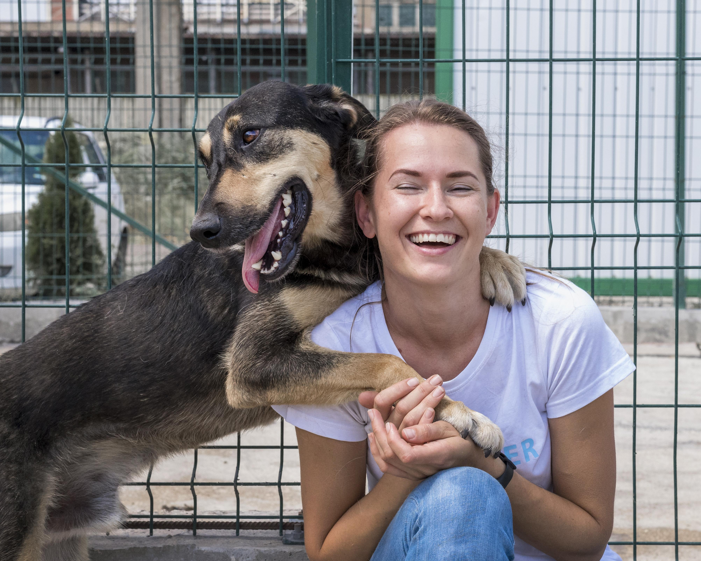

Наш приют «Хвостатый рай» помогает бездомным животным найти новый дом. Мы работаем с 2018 года и за это время помогли сотням кошек и собак.
Каждое животное, попадающее к нам, проходит осмотр у ветеринара, получает необходимое лечение, питание и заботу. Мы стараемся создать для них безопасные и комфортные условия, чтобы они быстрее восстановились и снова начали доверять людям.
Наша команда состоит из волонтёров и неравнодушных людей, которые ежедневно ухаживают за животными, гуляют с собаками, играют с кошками и помогают им социализироваться.
Мы активно ищем для наших подопечных новые семьи и всегда готовы помочь с адаптацией в новом доме.
Мы стараемся помочь каждому животному, которое оказалось в беде. Наша работа — это не только спасение, но и полный цикл заботы о питомцах.
Каждое животное для нас — это не просто подопечный, а живое существо со своей историей. Мы делаем всё возможное, чтобы они снова начали доверять людям и нашли тёплый дом, где их будут любить и заботиться о них.

Наша главная цель — сделать так, чтобы у каждого животного был дом и любящий хозяин.
Мы стремимся не просто дать временное убежище, а помочь питомцам обрести настоящую семью, где о них будут заботиться и любить.
Также мы хотим привлечь внимание к проблеме бездомных животных и показать, что даже небольшая помощь может изменить чью-то жизнь.